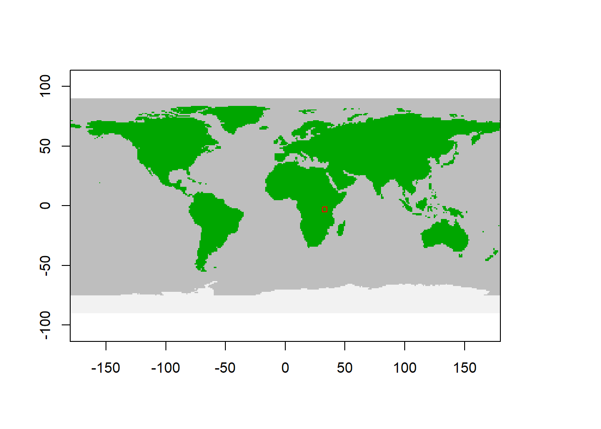
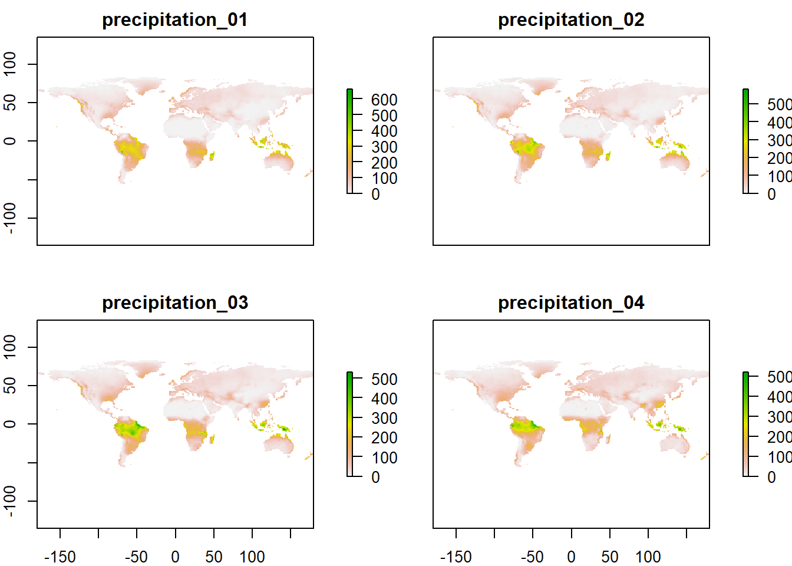

Chapter 3 Step 1 - 3
3.1 Step 1 - Load data
Defining the study area in degree long-lat.
Plot the spatial window to check selection
 This corresponds to somewhere in the Serengetti I think.
This is the default data to initialise the model. The spatial inputs is a relatively big list of raster files, but the others are small data frames.
% Warning: package 'rgdal' was built under R version 4.1.2chrt_def = madingley_inputs("cohort definition")
stck_def = madingley_inputs("stock definition")
mdl_prms = madingley_inputs("model parameters") # useful later for running the modelThe Spatial Input is the environmental variables in the form of several raster layers. I think the 12 slots are months of a year.
% List of 13
% $ realm_classification :Formal class 'RasterLayer' [package "raster"] with 12 slots
% $ land_mask :Formal class 'RasterLayer' [package "raster"] with 12 slots
% $ hanpp :Formal class 'RasterLayer' [package "raster"] with 12 slots
% $ available_water_capacity :Formal class 'RasterLayer' [package "raster"] with 12 slots
% $ Ecto_max :Formal class 'RasterLayer' [package "raster"] with 12 slots
% $ Endo_C_max :Formal class 'RasterLayer' [package "raster"] with 12 slots
% $ Endo_H_max :Formal class 'RasterLayer' [package "raster"] with 12 slots
% $ Endo_O_max :Formal class 'RasterLayer' [package "raster"] with 12 slots
% $ terrestrial_net_primary_productivity:Formal class 'RasterBrick' [package "raster"] with 12 slots
% $ near-surface_temperature :Formal class 'RasterBrick' [package "raster"] with 12 slots
% $ precipitation :Formal class 'RasterBrick' [package "raster"] with 12 slots
% $ ground_frost_frequency :Formal class 'RasterBrick' [package "raster"] with 12 slots
% $ diurnal_temperature_range :Formal class 'RasterBrick' [package "raster"] with 12 slots% [1] "RasterBrick"
% attr(,"package")
% [1] "raster"% class : RasterBrick
% dimensions : 180, 360, 64800, 12 (nrow, ncol, ncell, nlayers)
% resolution : 1, 1 (x, y)
% extent : -180, 180, -90, 90 (xmin, xmax, ymin, ymax)
% crs : NA
% source : memory
% names : precipitation_01, precipitation_02, precipitation_03, precipitation_04, precipitation_05, precipitation_06, precipitation_07, precipitation_08, precipitation_09, precipitation_10, precipitation_11, precipitation_12
% min values : 0, 0, 0, 0, 0, 0, 0, 0, 0, 0, 0, 0
% max values : 660.1902, 580.5394, 528.9492, 519.1000, 571.3623, 867.7639, 897.7082, 815.6902, 585.4082, 610.5918, 569.8918, 637.4180The resolution is 1 degree, which is approx. 111 km at the equator.
Plotting precipitation for months jan-april

The data has global coverage. I’m assuming this is WorldClim data, but not sure.
The cohort definitions look like this, and can be modified by the user.
DT::datatable(chrt_def,
extensions = "FixedColumns",
options = list(
scrollX = TRUE,
scrollY=T,
pageLength = 10))The stock definitions are in the default input data limited to evergreen and deciduous plants.
DT::datatable(stck_def,
extensions = "FixedColumns",
options = list(
scrollX = TRUE,
scrollY=T,
pageLength = 10))The model parameters are perhaps a bit more cryptic:
DT::datatable(mdl_prms,
extensions = "FixedColumns",
options = list(
scrollX = TRUE,
scrollY=T,
pageLength = 20))They are divided into 12 categories:
% Activity
% Diffusive Dispersal
% Responsive Dispersal
% Eating Carnivory
% Eating Omnivory
% Eating Herbivory
% Metabolism Ectotherm
% Metabolism Endotherm
% Metabolism Heterotroph
% Mortality
% Reproduction
% Terrestrial Carbon3.2 Step 2 - Modify input parameters
We will not do any modifications at this stage
3.3 Step 3 - Initialisation
Model initialisation is done using madingley_init() by supplying the input data above (excl. model parameters). Also one can set the maximum number of cohors allowed per cell. The default is 500 and max is 1000. a higher number increases computation time due to more cohort interactions.
mdata <- madingley_init(spatial_window = spatial_window,
cohort_def = chrt_def,
stock_def = stck_def,
spatial_inputs = sptl_inp,
max_cohort = 100)% Processing: realm_classification, land_mask, hanpp, available_water_capacity
% Processing: Ecto_max, Endo_C_max, Endo_H_max, Endo_O_max
% Processing: terrestrial_net_primary_productivity_1-12
% Processing: near-surface_temperature_1-12
% Processing: precipitation_1-12
% Processing: ground_frost_frequency_1-12
% Processing: diurnal_temperature_range_1-12
% Runtime is just a few seconds.
% List of 6
% $ cohorts :'data.frame': 1584 obs. of 16 variables:
% $ stocks :'data.frame': 32 obs. of 3 variables:
% $ cohort_def :'data.frame': 9 obs. of 14 variables:
% $ stock_def :'data.frame': 2 obs. of 10 variables:
% $ spatial_window: num [1:4] 31 35 -5 -1
% $ grid_size : num 1The output contain the cohors and stocks for each pixel.